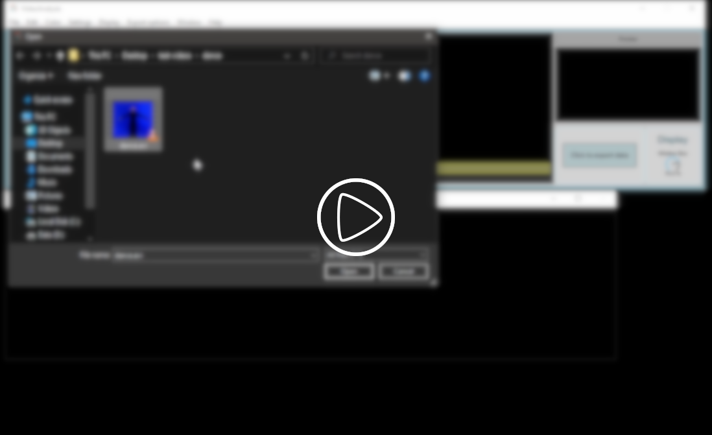
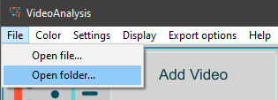
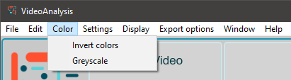
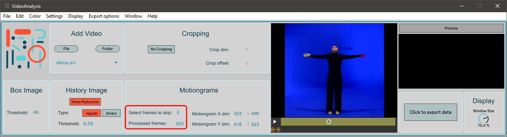
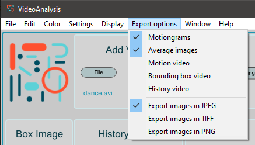
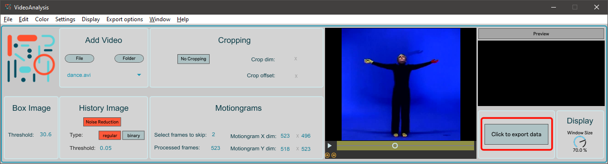
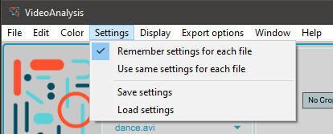
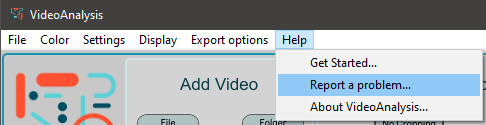

Get started with VideoAnalysis!
Open a video file
The simplest way to open a video file is to drag and drop it anywhere on the interface.
You can also open a video file by clicking on the File button on the Add Video panel.
Alternatively you can open a video file by selecting File > Open file... from the menu.
Open a folder of video files
You can also work with an entire folder of video files. Again, the easiest way open a folder is to drag and drop it on the interface. After the folder has been loaded, you can see its contents as items in a dropdown list.
You can also load a folder by clicking on the Folder button on the Add Video panel.
Alternatively you can open a folder by selecting File > Open folder... from the menu.
Source Display

Within the Source Display you can find a little preview of the loaded video.
You can toggle playback either by clicking on the Play icon, or by pressing the Space bar.
Below the Play icon you can find two yellow arrows, which you can use to nudge the playback
one frame forward or back. You can also do this by pressing Shift + Left arrow or Shift + Right
arrow on your keyboard. Next to the Play icon you can see the Timeline. This can be used
to quickly skim through the video, and more importantly to select the trimming points of the
analysis (see below).
Colors
To change the color space of your source video you have two options in VideoAnalysis. To invert colors, go to Color in the menu and check Invert colors. You can also convert the video to greyscale by checking Color > Greyscale. Note that these two options are independent from each other, so you can check either or both.
Trimming
On the Source Display you can set the in- and out-points of the analysis by selecting either edge of the yellow area on the Timeline and dragging it to the desired timepoint. This will affect the real-time playback as well as the analysis videos and images - you can get an idea by observing the number of Processed frames.
Skipping
In order to save time, skipping every other frame, or more, in the analysis can give you a faster analysis while still getting an idea of the motion. You can for example set this to 2, to skip two frames before including a frame in the analysis, then skipping two again. If skipping is set to 1, then the analysis will skip every other frame. You can get an idea about how it works by observing the number of Processed frames. Skipping frames can be a huge timesaver when working with extremely long videos.
Cropping
To crop the source video here is what you should do:
- In the Cropping panel activate cropping with the toggle.
- In the Source Display draw a rectangle over the area you wish to keep.
- Optionally you can also finetune the position of this cropping rectangle with the number boxes.
The Display window

The real-time preview of the analysis can be observed in the Display window. It consists of the bounding box video, the history video and the motion video, respectively. You can toggle these independently from the Display menu, with the additional option to set the window into floating mode. The Display always resizes automatically when you are changing the cropping dimension. To adjust the scale of the Display window use dial in the lower-right corner of the interface.

Export options
When you are satisfied with the current settings it is time to decide what kind of images and videos to render. You can toggle these in the Export options menu. Additionally you can also select which filetype you want to use for your images.
Export
To perform the analysis, render all your images, videos, as well as a statistical analysis of motion and a log file, just press the button which says 'Click to export data'. All files will be placed in the same folder as your source video.
Settings
When working with folders, by default VideoAnalysis keeps all settings local to each video. You can change this behavior by selecting Settings > Use same settings for each file. In this case the last settings (ie. the ones you had at the moment of changing to this mode) will apply to each video file during the batch export. To go back to using independent settings, select Remember settings for each file. It is also possible to save or load all settings into a .json file. This can make it easy to pick up your work where you left it, or to share your settings with other users.
Report a problem
Have you experienced errors or any strange behavior from VideoAnalysis? If you take a moment and report it to us, you can greatly contribute to the development of this software. Clicking on Help > Report a problem... opens your default internet browser and takes you straight to the Issues page at our Github repository for VideoAnalysis. Here you can click on the (green) New issue button, and tell us about the problem.